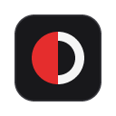
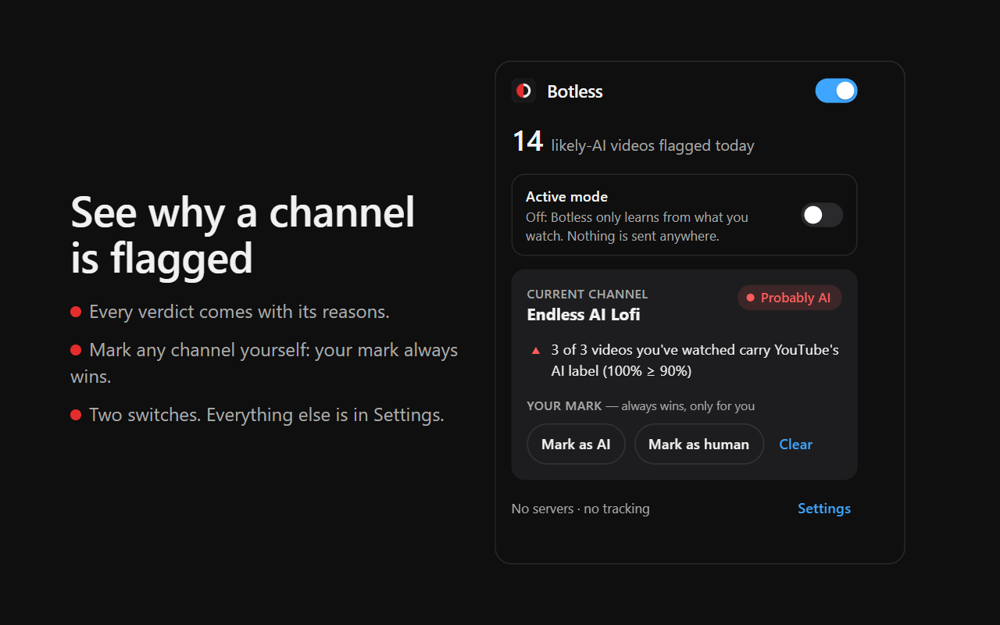

Know which YouTube channels are probably AI.
Botless is a free, open-source Chrome extension. It labels each channel Probably AI, Probably Human or Inconclusive, based on YouTube's own AI disclosure, then badges, fades, hides or skips its videos. Your call.
Add to Chrome Free on the Chrome Web Store
How it works
- YouTube's own label. Creators must disclose realistic AI-generated content, and YouTube shows it on the video as "Made with AI". Botless reads that label on the videos you watch.
- Per channel. A channel whose videos are consistently labeled becomes Probably AI. One labeled video alone never does, and a labeled video is flagged on its own.
- Your choice. Badge, fade or completely hide each verdict's videos, in your feed, search, the sidebar and Shorts. Optional auto-skip, with Undo. Mark any channel yourself: your mark always wins.

Private by design
- Runs on your device. Everything Botless learns stays in your browser.
- No servers, no accounts, no analytics. The developer never receives any of your data.
- Active mode is off by default. Turn it on to check the videos on your screen before you watch them. Those requests go to YouTube only, without your cookies.
- Never acts on your YouTube account. No likes, subscriptions or "Not interested".